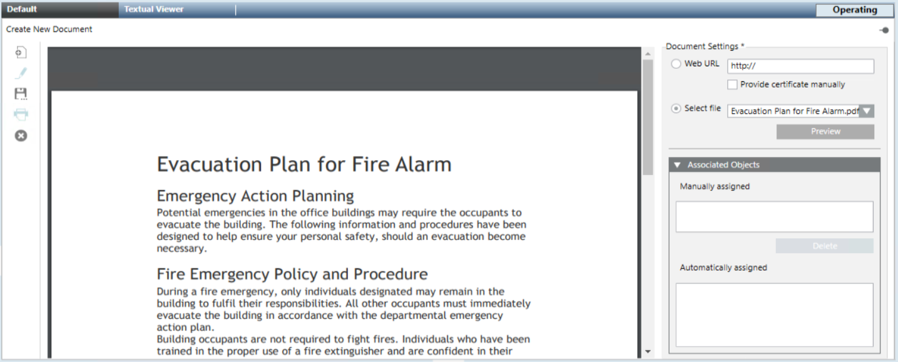

Setting Up a New Document
- You want to configure a read-only document in Desigo CC for the operator to consult or print. For background information, see Documents Workspace.
- System Browser is in Application View.
- You have appropriate user authorizations to view and configure documents in Desigo CC.
- The files you want to associate were copied under [Installation Drive]:\[Installation Folder]\[Project Name]\documents\[…] on the Desigo CC server station.
NOTE: You cannot use a Desigo CC Windows app client (ClickOnce application) to set up documents if the files or subfolders paths include the following special characters: < > * % & : ?
In addition, if TXT files are to be used in Desigo CC Windows app client, to prevent display issues with special characters, use TXT files with encoding different from UTF-8. - You created the subfolder where you want to place the new document. See Creating Subfolders for Organizing Documents.
- Select Applications > Documents > [document folder].
- The Documents workspace displays empty.
- Associate a file or a web link to the selected document in one of the following ways:
- Click Web URL and type in the web link (URL of an HTML page) that you want to use.
NOTE: If a connection is to be established with a website that require a certificate, you must also select the check box Provide certificate manually. - Click Select file, and then expand the appropriate folder to locate and select the required file (PDF, RTF, TXT, or JPG).

Do not use the Document viewer to show complex AutoCAD drawings
The use of complex AutoCAD drawings exported into single or multilayer PDF files will result in a slow and inefficient image display. It is recommended to import AutoCAD drawings into the Desigo CC graphics application.- Click Preview to display the content of the selected file or web link.

- (Optional) To create an association between this document and one or multiple system objects, see Making a Document Display as a Related Item of an Object.
- Click Save As
 .
. - In the Save Object As dialog box, select the folder where you want to save the new object and click OK.
- The new document object is available under the selected subfolder in System Browser. Depending on the document type, the read-only content or a web page displays in the Documents workspace.